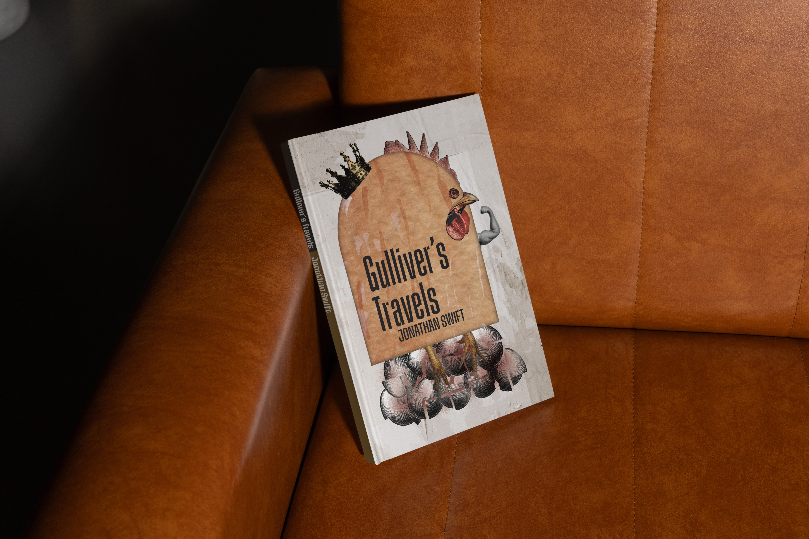
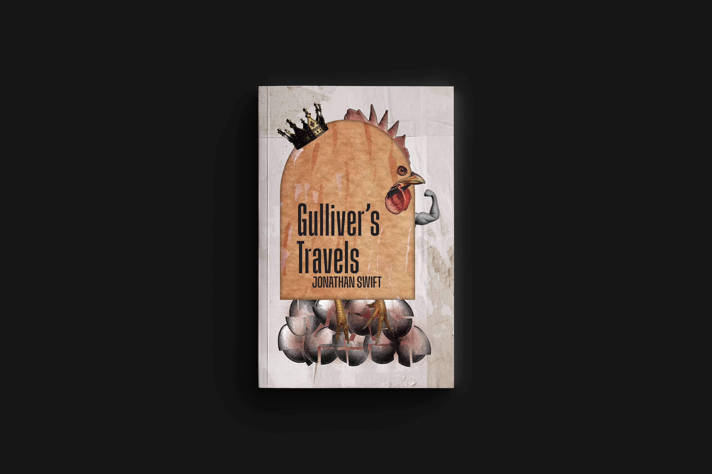
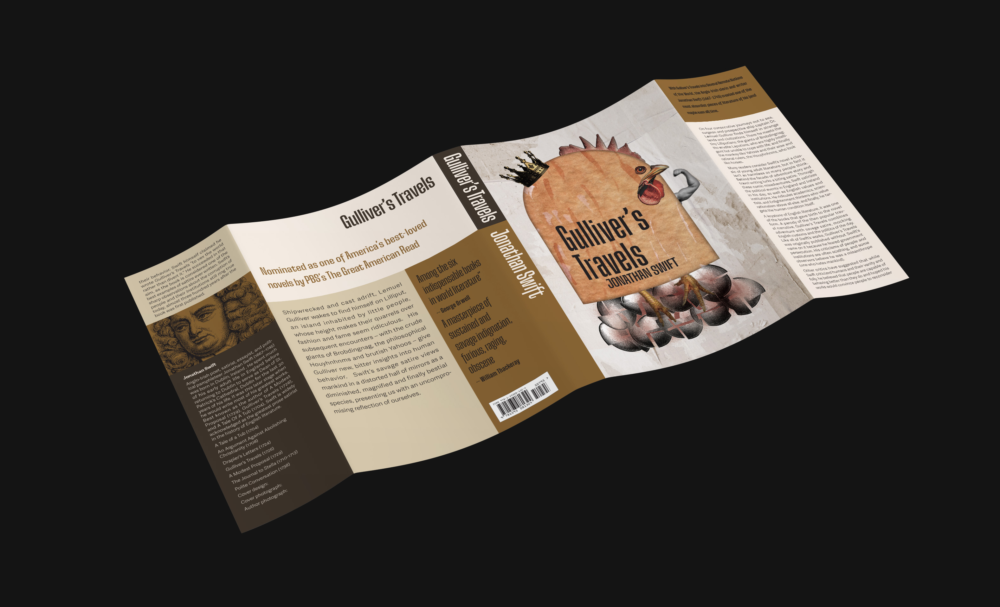

Sketch placeholder
Add concept sketches, thumbnails, or iteration sheets here.
Case Study · Design · 2025
A full-wrap paperback book cover designed as a complete print package including the front cover, spine, and back cover. The project explored how typography, imagery, and composition work together across an uninterrupted surface to create a cohesive reading experience before the book is even opened. Most covers treat the front, spine, and back as independent design problems. Instead, I approached the wrap as one unified narrative—where the spine becomes an integral part of the story, not an afterthought.



Add concept sketches, thumbnails, or iteration sheets here.
Add studio, making-of, or work-in-progress images here.
Add presentation mockups, close-ups, or alternate views here.
The goal was to create a compelling full-cover design that functions from every viewing angle while meeting the technical requirements of commercial book production. The design needed to maintain visual balance across the front, spine, and back while supporting the book's narrative and stopping a browser in a bookstore through immediate visual impact.
Rather than working with three separate artboards, I designed the entire cover wrap on a single canvas, treating it as one continuous image space. This approach forced intentional composition decisions—how imagery flows from front to back, how typography anchors across sections, where visual breathing room was needed versus where tension could build.
I explored multiple layout concepts before developing a unified composition that wrapped naturally across the entire cover. Typography was carefully adjusted to establish hierarchy and readability, while imagery was positioned to create continuity from front to back. Hierarchy and spacing were calibrated to ensure the title and key information remained prominent and readable across all three sections while maintaining legibility across different viewing scales and lighting conditions.
Production constraints—spine width, bleeds, and alignment—were incorporated into the design process from the beginning, not as limitations but as structural elements that informed compositional decisions. I mapped out how imagery would bleed, where critical information needed to sit safely away from fold lines, and how color would maintain impact after the cover was folded and creased, ensuring production accuracy and visual integrity.
The finished cover successfully merges aesthetic intention with production reality. All elements—visual composition, typographic hierarchy, color strategy—work together as an integrated system that communicates the book's essence at first glance. The deliverables included the front cover, spine, back cover, full wrap layout, and print-ready cover file—a complete package ready for commercial production.
This project strengthened my understanding of print production, cover composition, and designing within real publishing constraints. By treating the cover as a unified design problem rather than a collection of separate surfaces, the result is stronger and more intentional. It demonstrates my ability to create polished, production-ready layouts that combine strong typography with effective visual storytelling while meeting the demands of print production.